1.1.8.1. Outline
The protection fuse is disconnected because over current flew through the surge protector when the over or surge voltage flew into the 3-phase voltage(R, S, and T) to servo drive unit.
1.1.8.2. Causes and checking methods
|
(1) Please examine the fuse in the Servo Drive Unit. n Check the fuse disconnection of servo drive unit.
<Case: Fuse has not been cut-off> (2) Please examine the components that are related to the over-current error detection error. n Please replace CNSGC cable and examine it CNSGC. n Please replace BD530/BD531 and examine it. n Replace the servo drive unit and then check it.
<Case: Fuse has been cut-off> (3) Please examine the components that are related to power. n Please examine the 3-phase voltage from the inside of controller. n Please examine the controller's 3-phase input voltage. n Replace the servo drive unit and then check it. |
(1) Please examine the fuse in the Servo Drive Unit
Occurrence of AMP over-current error is detected by a diode module when the input 3-phase voltage exceeds the specification. Generated error will be handled by the BD530/BD531 through a CNSGC cable.
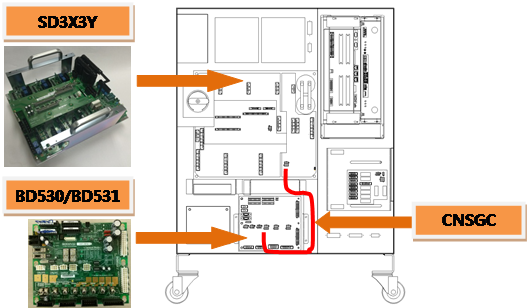
(a) Hi5a-S00 controller
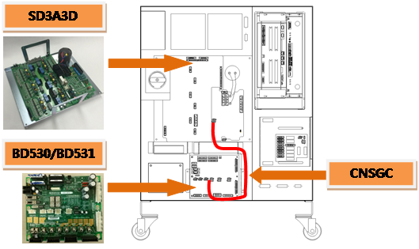
(b) Hi5a-S30 controller
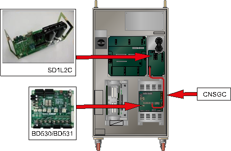
(c) Hi5a-N00 controller
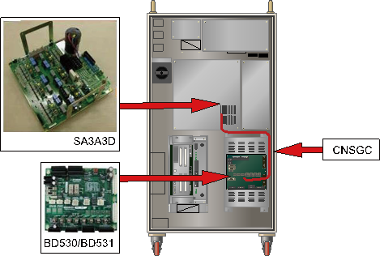
(d) Hi5a-N30 controller
Figure 1.38 Arranging the parts related to the AMP overcurrent error
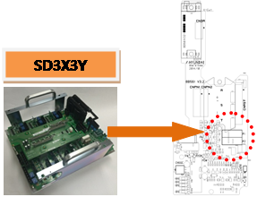
(a) Hi5a-S00 controller (SD3X3Y)
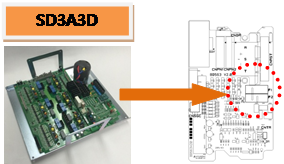
(b) Hi5a-S30 controller (SD3A3D)
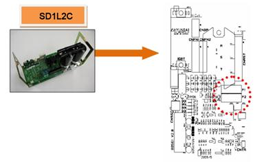
(c) Hi5a-N00 controller (SD1L2C)
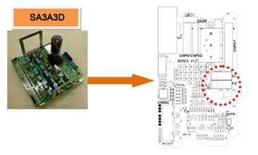
(d) Hi5a-N30 controller (SA3A3D)
Figure 1.39 Position of the AMP overcurrent detection fuse
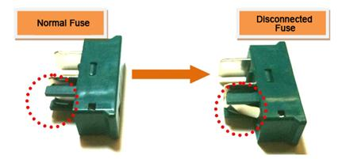
Figure 1.40 Appearance of Disconnected AMP Over-Current Detection Fuse
(2) Please examine the parts that are related to over-current error detection
If AMP over-current error occurs while the fuse has not been cut-off, CNSGC, BD530/BD531 or the Servo Drive Unit is faulty. Please refer to the compositions of controller from the manual and examine the each component.
n Replacement and examining of CNSGC cable
Replace the CNSGC cable with new one and test it. If the error does not persist, cable connection problem caused this error. Please replace the CNSGC cable with new one.
n Replacement and examining of BD530/BD531
Replace the BD530/BD531 with new one and test it. If the error does not persist, the board malfunction caused this error. Please replace the BD530/BD531 with new one.
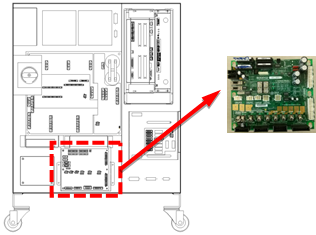
(a) Hi5a-S controller
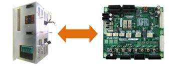
(b) Hi5a-N controller
Figure 1.41 Replacement of BD530/BD531
n Replacement and inspection of servo drive unit
The AMP overcurrent error detection module is as shown below.
Ø Hi5a-S controller : Medium size SD3X3Y, Small size SD3A3D
Ø Hi5a-N controller : Medium size SD1L2C, Small size SA3A3D
Components that detects the AMP over-current error are SD3X3Y (medium size) and SD3A3D (small size). Please check the components in the controller that you are currently using and examine it. Please replace it with new one and see if the error persists.
Ø Medium size Robot's Servo Drive Unit: SD3X3Y
Ø Small size Robot's Servo Drive Unit: SD3A3D
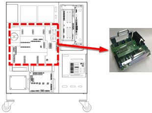
(a) Hi5a-S00 controller
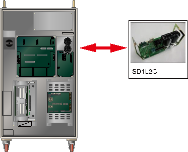
(b) Hi5a-N00 controller
Figure 1.42 Replacing the module when the overcurrent error occurs
(3) Please examine the components that are related to the power.
Over-current error occurs when an over-voltage or surge voltage that exceeds 3-phase AC 220V enters to the Servo Drive Unit. Over-voltage will trigger the surge protector, and the serial connected fuse gets disconnected, so the error will occur.
n Examine the input voltage
If a voltage over AC242 V enters to the Servo Drive Unit, over-current error may occur when the motor turns on.
If the input voltage exceeds the allowed range, please examine according to a controller's input voltage examination procedures and a controller's 3-phase internal voltage examination procedures.
Ø Servo Drive Unit input voltage specification: 3-phase AC 220V
Ø Allowed range when motor turns on: 198V ~ 242V
n Replacement and inspection of servo drive unit
Replace the AMP overcurrent error detection module and then check if the error occurs again.
An error may occur continuously due to a module's internal circuit malfunction.
Ø Hi5a-S controller
l Medium size Robot's Servo Drive Unit: SD3X3Y
l Small size Robot's Servo Drive Unit: SD3A3D
Ø Hi5a-N controller
l Medium size Robot's diode module : SD1L2C
l Small size Robot's Servo Drive Unit: SA3A3D